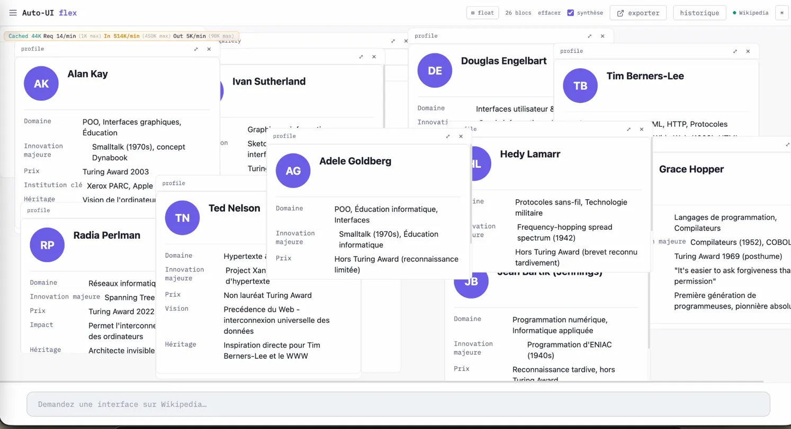

Je veux décrire ici une chose qui n'existe pas encore et qui devrait exister.
Depuis trois ans, l'industrie a posé une seule réponse à la question de la bonne forme d'interaction avec un LLM. Un chatbot. Un rectangle de texte dans une fenêtre. Vous tapez, l'agent répond. Parfois il appelle un outil derrière le rideau et reformule le résultat. Dans tous les cas, c'est un processus dans une boîte et vous restez de l'autre côté.
On regarde un ballet. On ne danse pas.
Le web de 1994 avait le même problème avant Mosaic (le premier browser web). Gopher fonctionnait. Personne ne s'en souvient parce que ce qui est venu après était plus pertinent. Le chatbot dans sa forme d'aujourd'hui est le Gopher du web post-LLM. Il fonctionnera quelques années. Puis quelque chose de différent apparaîtra.
Je veux que ce nouveau paradigme soit un commun, pas une rente. C'est pour ça que j'écris ce texte.
1. Une scène qui contient tout le problème
Une assistante parlementaire à Paris. Son député siège à la commission des Affaires sociales. Demain matin ils examinent un projet de loi sur le handicap. Avant 18 heures elle doit produire un document qui montre quatre choses : qui a déposé quels amendements sur ce sujet en six mois, comment chaque groupe a voté, quelles associations ont été auditionnées, et une comparaison avec les trois législatures précédentes.
Elle a trois options. Tout à la main — quatre heures, tableau illisible. Un outil propriétaire — plusieurs milliers d'euros par an, elle voit ce que le fournisseur a décidé de lui montrer. Ou un chatbot — le tableau sort propre, mais elle ne peut pas le modifier, ne peut pas le partager en interactif, et ne peut pas vérifier d'où viennent les chiffres.
Aucune des trois ne suffit. Et elles ratent toutes le problème pour la même raison.
Le vrai problème n'est pas comment répondre à la question. C'est comment produire à plusieurs un objet qui survivra à la conversation. Un objet qu'un humain a pensé, qu'un agent a aidé à composer, qu'un autre humain pourra ouvrir, modifier, archiver, vérifier. Ce qui manque n'est pas une IA plus intelligente. C'est l'objet.
2. L'objet qui manque
Je l'appelle une hyper-recette. Voici ses propriétés.
Elle contient un état composé. Un ou plusieurs widgets, chacun lié à une source de données, dans un certain ordre, avec certaines interactions possibles entre eux. Pas une conversation. Un état.
Elle est adressée par son contenu. Deux hyper-recettes identiques ont la même adresse. Si vous changez un caractère, l'adresse change. C'est ce que git fait pour les commits, IPFS pour les fichiers.
Elle tient dans une URL. Littéralement. Une chaîne de caractères que vous envoyez par SMS, que vous collez dans un mail. Le lien est l'objet, encodé. Quand vous cliquez, votre navigateur décode et reconstruit l'état. Pas de serveur d'hyper-recettes. Pas de base de données.
Elle se modifie. Vous recevez l'hyper-recette d'un collègue. Vous l'ouvrez. Vous changez un widget. Vous figez une nouvelle version. La nouvelle version connaît l'ancienne par son hash. La chaîne se trace.
Elle survit. À son auteur. À son serveur. À l'outil qui l'a composée. Comme une page HTML statique de 1996, elle s'ouvrira dans vingt ans à condition que les sources de données qu'elle référence soient encore là. Cet objet n'est pas neuf. C'est ce que Ted Nelson appelait un objet hypertextuel en 1965.
3. Le web qu'on a perdu sans l'avoir décidé
Le web des années 1994–2005 avait une propriété qu'on a oubliée. N'importe qui pouvait publier une page sur un hébergeur mutualisé à cinquante francs par mois. Quiconque dans le monde pouvait la lire sans permission. Ce web était distribué, égalitaire, persistant.
On a perdu tout ça. Pas par décision. Par accumulation de petits choix commerciaux qui chacun semblaient raisonnables. Vous publiez une photo sur Instagram — ce n'est pas votre photo, c'est une représentation hébergée chez Meta. Pareil pour vos Google Docs, vos pages Notion, vos artifacts ChatGPT. Chaque objet que vous produisez avec un outil moderne est hébergé, pas hypertextuel. Si l'outil disparaît ou vous bannit, l'objet disparaît.
Le web post-LLM, tel qu'il s'installe sous nos yeux, reproduit ce glissement une couche plus haut. Vos conversations avec les LLMs sont hébergées. Vos artifacts sont hébergés. Quand vous partagez un artifact à un collègue, vous partagez un lien qui pointe vers un serveur propriétaire qui peut changer demain.
Je veux l'autre web. Pas à l'identique. Sa topologie, appliquée à un objet nouveau : la composition d'interaction entre un humain, un agent et des données.
4. Le test de cinq ans
Prenez un artifact Claude qui vous a plu. Notez la date. Dans cinq ans, sera-t-il encore accessible exactement dans l'état où vous l'avez publié ? La réponse honnête est non. L'infrastructure aura changé. Les politiques de rétention auront été révisées.
Prenez maintenant une page HTML statique écrite en 1996. Dans presque tous les cas, elle s'ouvre aujourd'hui exactement comme à l'époque. Pas parce que l'infrastructure a été préservée — l'infrastructure est morte. Elle s'ouvre parce que l'objet porte tout ce dont il a besoin pour se rendre.
Cette autosuffisance définit l'hypertexte. Pas la présence de liens. Pas le formatage. La capacité d'un objet à exister sans son serveur d'origine. Une hyper-recette est une page HTML de 2026 enrichie d'une connexion à des données et à un agent. Le reste découle de là.
5. Pourquoi maintenant
Il manquait deux ingrédients. Ils sont arrivés ensemble en 2024–2026.
Le premier est le Model Context Protocol, ou MCP. Anthropic l'a publié fin 2024. Du JSON-RPC sur HTTP, une quinzaine de méthodes. Sa spec tient en quelques pages. Son importance n'est pas dans la technique — elle est dans le fait qu'il a été adopté. Des centaines de serveurs MCP publics existent aujourd'hui : données parlementaires françaises, observations d'iNaturalist, archives Hacker News, data.gouv, Wikipedia, OpenStreetMap. Avant MCP, exposer une source de données à un agent était un travail sur-mesure. Après MCP, c'est un exercice standard.
Le second est WebMCP. Le pendant côté navigateur. Une page web peut exposer ses composants comme des outils, de façon symétrique. Le W3C a publié un draft au printemps 2026. Chrome Canary 146 commence à l'implémenter nativement. Avec WebMCP, l'interface elle-même expose ses capacités — l'agent peut dialoguer avec l'interface de façon structurée, pas seulement afficher des résultats.
Ces deux briques changent ce qui est possible dans une page web. Et elles sont si récentes que les bonnes abstractions au-dessus ne sont pas encore tranchées. L'industrie n'a pas décidé. C'est une fenêtre. Je veux écrire dans cette fenêtre avant qu'elle se referme.
6. La norme de Bellard
Avant de descendre dans le code, une norme de qualité. Sans norme, tout ce qui précède reste du positionnement.
Fabrice Bellard a compris ce que faire simple veut dire quand faire simple pourrait être confondu avec faire moins. TinyCC est un compilateur C complet en 100 Ko. Il compile tout C89 et la majeure partie de C99. Son code généré est plus lent que celui de GCC — mais il compile le même langage. Il ne dit pas je ne supporte pas les unions. QuickJS implémente l'intégralité d'ES2023 et passe test262 à plus de 99%. Ce qu'il perd par rapport à V8 est la vitesse sur les boucles chaudes. Il ne dit pas j'implémente un sous-ensemble.
Le pattern est toujours le même : faire la même chose que l'incumbent, ou plus, en cent fois moins de code, avec cent fois moins de dépendances, sans amputer la surface fonctionnelle. Ce que Bellard compresse, c'est l'implémentation. Ce qu'il n'ampute jamais, c'est le spec.
C'est cette discipline qu'il faut pour construire un web post-LLM honnête. La tentation facile est de réduire les ambitions pour simplifier. Supprimer une feature pour tenir dans une démo. Contourner un edge case pour livrer plus vite. Chaque coupe semble raisonnable. Ensemble elles reconstruisent la médiocrité.
C'est la règle que je m'impose pour webmcp-auto-ui. Le package core fait 2569 lignes de TypeScript. Zéro dépendance runtime. Il implémente les 17 features MUST du draft W3C WebMCP du 27 mars 2026, plus un client MCP Streamable HTTP, plus un validateur JSON Schema. Le SDK officiel équivalent, avec ses dépendances, pèse dix fois plus pour une couverture comparable. Je revendique cette différence comme une position éthique, pas comme une prouesse technique.
Emmanuel appartient à la même lignée. Son travail depuis vingt ans sur les données publiques françaises — OpenFisca, data.gouv, aujourd'hui Moulineuse et Tricoteuses — est marqué par la même économie de moyens et la même rigueur.
7. Quatre blocs de contexte
Quand un agent LLM reçoit son system prompt, ce prompt contient la description de ce qu'il peut faire. La forme habituelle est une liste plate d'outils. Cette forme pose un problème qu'on ne voit pas avec dix outils et qui devient douloureux à trente — les outils ne sont pas du même type. Un outil qui interroge une base parlementaire et un outil qui affiche un graphique n'ont rien en commun, sauf qu'ils sont callables.
Dans webmcp-auto-ui, le contexte est structuré en quatre blocs nommés.
mcp.tools outils exposés par les serveurs MCP connectés mcp.recipes recettes pré-écrites fournies par ces serveurs webmcp.tools composants UI enregistrés localement via le polyfill webmcp.recipes recettes de composition côté vue
Cette structure matérialise la séparation données/vue directement dans le prompt. Un agent qui lit ce contexte comprend en une passe que mcp.* sert à obtenir de l'information et que webmcp.* sert à montrer de l'information. Un humain qui débugge voit en dix secondes d'où vient chaque capacité. Une seule chose à retenir : la structure du prompt système enseigne à l'agent l'architecture du système.
8. Les recettes — des deux côtés
Depuis le début j'utilise le mot recette sans l'avoir défini. Voici la définition d'Emmanuel, à peu de choses près. Une recette est un objet, peu importe son format exact, qui aide l'agent à faire mieux, plus vite, ou avec moins d'erreurs une opération qui implique des outils. C'est tout. Pas d'ontologie compliquée. Une recette est un aide-mémoire exécutable.
Les recettes existent des deux côtés de la symétrie. Côté MCP, le serveur Moulineuse expose des recettes pré-écrites pour des requêtes parlementaires fréquentes. Un agent peut appeler top_votes_par_groupe sans savoir comment construire la requête SQL sous-jacente. La recette encapsule la connaissance métier. Côté WebMCP, une recette de vue décrit comment composer des composants pour un cas d'usage récurrent.
Voici à quoi ressemble une recette simple.
name: parlementaire-profile
description: Profil complet d'un parlementaire avec stats, votes, interventions
components_used:
- profile
- stat
- chart
- timeline
layout:
type: vertical
order: [profile, stat, chart, timeline]
interactions:
- when: timeline.date-selected
then: chart.update-filter
example_data:
actor_uid: PA722142
La description est ce que verront les autres composeurs et ce que l'agent lira. Les interactions décrivent les liaisons par le bus d'événements — cliquer sur une date dans la timeline filtre automatiquement le graphique adjacent. Une fois déposée dans le dossier des recettes du serveur WebMCP, cette recette devient disponible pour tous les agents qui consomment ce serveur. N'importe quel utilisateur peut appeler la recette en disant simplement utilise la recette profil parlementaire pour Ruffin.
Cette simplicité fait la différence entre une infrastructure réservée aux développeurs et une infrastructure que les praticiens peuvent étendre. Un praticien qui a passé trois ans à analyser des données parlementaires sait mieux que n'importe quel développeur comment présenter ces données. Si on lui demande d'écrire du JavaScript, il ne le fera pas. Si on lui demande d'éditer un fichier YAML de vingt lignes en suivant un template, il le fera.
9. Deux APIs qui ne font pas la même chose
Il existe dans webmcp-auto-ui deux APIs pour composer des widgets. Une API historique avec un outil par type — render_stat, render_table, render_chart. Et une API plus récente avec un outil unifié et de la découverte intégrée — component("stat", {...}), component("help").
Un lecteur pressé dirait : gardez-en une, jetez l'autre, simplifiez. C'est le réflexe anti-bellardien à discipliner. Les deux APIs ne font pas la même chose, même si elles se recouvrent.
render_* est l'API impérative. Elle sert quand on sait déjà ce qu'on veut rendre. Une hyper-recette figée, quand elle est rechargée, rejoue ses appels — elle appelle render_stat directement parce que tous ses paramètres sont connus à l'avance. Style déclaratif, direct, sans latence.
component() est l'API introspective. Elle sert quand on ne sait pas encore ce qui est disponible ou qu'on découvre le catalogue. Un agent qui arrive sur une session et qui n'a jamais vu ce serveur WebMCP fait component("help"), puis component("help", "hemicycle"), puis component("hemicycle", { ... }). Style exploratoire, négocié, avec un aller-retour de plus.
Les garder toutes les deux n'est pas une dette transitoire. C'est un choix architectural à deux niveaux. Ce qu'il ne faut pas faire, c'est laisser les deux APIs diverger dans l'implémentation — le code doit factoriser le catalogue à un seul endroit et exposer les deux surfaces au-dessus.
10. Composer une vue, concrètement
Cette section s'adresse aux composeurs : assistants parlementaires, journalistes de données, fonctionnaires qui construisent des tableaux de bord. Le niveau technique attendu est je sais cliquer sur un lien et copier une URL. Pas plus.
Vous ouvrez demos.hyperskills.net/flex. Si c'est la première fois, on vous demande de choisir un modèle : Claude Haiku sur les serveurs d'Anthropic, rapide mais nécessite une clé d'API ; ou Gemma 4 E2B qui tourne entièrement dans votre navigateur, gratuit mais requiert un téléchargement initial de 2 Go. Vous choisissez Gemma si vous travaillez sur des données sensibles, Haiku si vous voulez aller vite.
Vous tapez votre intention dans le chat : Montre-moi les votes des trois derniers scrutins à l'Assemblée par groupe politique, avec un graphique et une chronologie.
L'agent lit. Il consulte ses quatre blocs de contexte. Il construit un plan. Vous ne voyez pas ce plan — il reste interne. Ce que vous voyez, c'est le résultat qui apparaît progressivement sur le canvas. Un titre. Un graphique en barres. Une timeline. Le graphique en barres verticales ne vous plaît pas — les noms des groupes sont longs. Vous cliquez dessus. Un menu apparaît. Vous choisissez barres horizontales. Le widget se retransforme instantanément. Pas besoin de parler à l'agent. C'est de la manipulation directe.
Vous cliquez sur Figer ce skill. Une modale apparaît. Taille : 12 Ko brut, 4 Ko après gzip. URL complète : https://demos.hyperskills.net/flex/?hs= suivie d'une longue chaîne base64. Vous copiez l'URL. Vous l'envoyez à votre député par Signal.
Trois heures plus tard, votre député clique. Son téléphone décode l'URL, reconstitue l'état. Il voit exactement ce que vous avez figé. L'interface est en mode consommateur par défaut — pas de chat, pas de panneau qui distrait. Il trouve une chose qui manque, clique sur Mode composeur, tape sa demande, fige une nouvelle version, vous renvoie l'URL. Vous recevez la nouvelle URL, vous voyez la version modifiée. L'agent vous dit : cette version descend de la version que vous avez produite, hash abc123.

11. Mode consommateur / mode composeur
L'interface a deux modes. En mode consommateur — le mode par défaut quand on ouvre une URL reçue par SMS ou par mail — l'utilisateur voit la vue telle qu'elle a été figée. Il peut interagir avec les widgets, trier des colonnes, filtrer une timeline, zoomer sur une carte. Il ne compose pas. C'est le mode du parlementaire qui reçoit une note de son assistante.
En mode composeur, l'utilisateur voit le même état figé, plus le chat, plus les outils. Il peut modifier, dupliquer, transformer, réorganiser. Quand il est satisfait, il fige une nouvelle version qui référence la précédente comme parent.
Le passage entre les deux modes est un bouton. Pas un compte. Pas une connexion. Cette absence de friction est délibérée — je veux que la lecture soit zéro effort et que la modification soit un choix facile.
Chaque composant reçoit un prop mode. En mode consommateur, les points de prise sont masqués par CSS. En mode composeur, ils sont révélés. Un seul composant, pas deux versions qui divergent.
12. La provenance visible sur chaque widget
Chaque widget rendu dans une hyper-recette porte un indicateur visuel de sa provenance. Un badge discret. Un tooltip au survol : Source : Moulineuse, recette amendements_par_groupe, exécutée le 8 avril 2026 à 14h32. Widget : profile-card, version 0.5.1.
Quand un parlementaire compose une vue pour prendre une décision qui affectera des millions de personnes, savoir d'où vient chaque donnée est essentiel. Si une colonne dit 75% des députés ont voté contre, il faut pouvoir savoir d'où vient ce 75% — de quelle source, de quelle requête, à quelle date, avec quelle définition de voté contre. Sans cette provenance, le chiffre est un slogan. Avec, c'est un fait documenté.
Le design doit être discret mais consultable. Un petit badge dans le coin du widget, un détail complet au survol.
13. La lignée
Si vous connaissez l'histoire des idées hypertextuelles, vous avez reconnu plusieurs motifs. Je m'inscris délibérément dans une lignée.
Ted Nelson a nommé l'hypertexte en 1965. Son rêve — Xanadu — était un système d'interconnexion universelle des données où tout document pouvait transclure n'importe quel autre, avec traçabilité des versions et des auteurs. Le web de Berners-Lee a réalisé une version plus modeste et c'est précisément pour ça qu'il a été adopté. Mais Nelson avait raison sur l'essentiel : un objet numérique devrait connaître ses origines et survivre à ses serveurs. L'hyper-recette est une tentative de récupérer cette propriété sans attendre Xanadu.
Tim Berners-Lee a rendu concret en 1989 ce que Nelson rêvait. Les choix qu'il a faits ont été critiqués — pas de transclusion, pas de versionnement, des liens unidirectionnels et cassables. Mais ces choix ont permis au web de se répandre. En 2016, il a créé Solid pour reconstruire un web où les utilisateurs possèdent leurs données dans des pods personnels. Solid n'a pas atteint l'adoption de masse. Je partage l'ambition de Solid et je l'applique à un objet légèrement différent : pas la propriété des données, mais la propriété des compositions d'interaction.
Bret Victor n'a pas créé de protocole. Il a écrit, parlé, fait des démos. Ses essais entre 2011 et 2019 — Learnable Programming, Magic Ink, Up and Down the Ladder of Abstraction, Seeing Spaces — forment un corpus critique sur la médiocrité des interfaces contemporaines. Victor reproche aux outils de développement de forcer un détour par le texte. Dans ses outils, on manipule la représentation directement. Ma dette envers Victor, c'est la direction : manipulation directe des widgets, pas de détour par un éditeur de code, feedback immédiat.
Alan Kay est derrière presque tout ce qui précède. Smalltalk à Xerox PARC dans les années 1970. Le Dynabook qui en 1972 décrivait un ordinateur personnel portable pour l'éducation des enfants, vingt ans avant que la technologie le permette. La notion d'ordinateur comme médium, pas comme outil. Kay est un critique féroce de la médiocrité ambiante et un défenseur infatigable de l'ambition intellectuelle dans la conception d'outils numériques. Ma dette envers lui est, simplement, la conviction que ça devrait être mieux. Pas un peu mieux. Beaucoup mieux.
Christopher Alexander. A Pattern Language en 1977. The Timeless Way of Building en 1979. Sa thèse : les habitants d'un bâtiment doivent être impliqués dans sa conception, parce qu'ils savent des choses sur leur vie quotidienne que l'architecte ne peut pas deviner. Le rôle de l'architecte n'est pas de concevoir pour eux mais de leur fournir un vocabulaire de possibilités — les patterns — et de les accompagner dans leurs choix. C'est une position politique sur le pouvoir de concevoir son environnement. Elle s'applique aux outils numériques. Les utilisateurs d'hyper-recettes doivent avoir accès aux patterns et pouvoir les combiner, sans passer par un développeur.
Ivan Sutherland. Sketchpad en 1963. The Ultimate Display en 1965. Sutherland a écrit que le rôle d'un display est d'être un looking-glass into a mathematical wonderland. Un objet qui vous permet de vous familiariser avec des concepts qui n'ont pas d'équivalent dans le monde physique. Sa thèse profonde est que l'ordinateur sert à comprendre des choses qu'on ne peut pas comprendre sans lui. Pas à automatiser des tâches qu'on ferait sans lui, seulement plus lentement. Les hyper-recettes, au mieux, sont ce genre de miroir. Une assistante parlementaire qui compose une vue n'est pas en train de faire un travail qu'elle ferait à la main plus lentement. Elle fait un travail qu'elle ne pourrait pas faire du tout sans cet outil — croiser six sources, les présenter dans une forme lisible, les transmettre comme un objet citable.
Emmanuel. Pour le cadrage initial. Le component() refactor du 8 avril. La symétrie MCP/WebMCP des recettes. La rigueur de spécification. Vingt ans de travail sur les communs de données publiques françaises. L'entêtement à nommer les patterns qu'il voit plutôt que de se laisser porter par la mode. Ce texte et ce projet n'auraient pas cette forme sans lui.
14. Ce qui reste à faire
Je n'ai pas tout résolu. L'audit ligne par ligne du polyfill core. Les 2569 lignes affirment couvrir les 17 features MUST du draft W3C — personne n'a vérifié cette affirmation feature par feature. Il faut ajouter une trace de couverture, soit en commentaires structurés dans le code, soit dans un document séparé.
La portabilité du contrat UI au-delà de Svelte. Aujourd'hui le package ui est entièrement Svelte. Pour que le projet soit adoptable au-delà des développeurs Svelte, il faut documenter le contrat qu'une implémentation alternative — React, Vue, vanilla — doit respecter. Ce contrat doit vivre séparément, comme un document, pas comme du code.
Les mesures publiques. Le README ne contient aucun chiffre. Taille minifiée comparée au SDK MCP officiel. Couverture de spec. Nombre de dépendances par package. Taille typique d'une hyper-recette en octets. Sans ces chiffres, personne ne peut juger le projet sans lire tout le code. C'est anti-bellardien dans la communication.
Le test à grande échelle. La cible est le hackathon de l'Assemblée nationale. Une démo où parlementaires, assistants et administrateurs composent ensemble, figent, partagent. Si cette démo tourne devant cent personnes sans s'effondrer et sans explications préalables, le projet a passé son test.
15. Ce que vous pouvez faire maintenant
Si vous êtes développeur, lisez le code. Le package core tient dans un après-midi. Le polyfill WebMCP est dans packages/core/src/polyfill.ts. Si vous trouvez quelque chose de faux, ouvrez un issue. Si vous voulez porter ui vers React ou Vue, attendez le contrat documenté — il arrive.
Si vous êtes designer, regardez les démos sur demos.hyperskills.net. Composez quelques vues. Notez ce qui vous frustre. Est-ce que le geste de figer est au bon endroit ? Est-ce que la provenance des widgets est visible sans être intrusive ? Ce retour vaut plus que des opinions sur l'architecture.
Si vous êtes journaliste de données ou analyste, essayez de produire une investigation publiable sur des données publiques que vous connaissez. Pas un exemple jouet. Une vraie investigation. Les hyper-recettes que vous produisez peuvent servir de cas d'usage et de test de robustesse du format.
Si vous êtes dans une institution publique — mairie, préfecture, ministère, école, bibliothèque — contactez-nous. Ce projet est libre. Je peux organiser une démonstration adaptée à votre contexte. Je n'ai rien à vendre. Je cherche des terrains de test.
Épilogue
Sutherland a écrit en 1965 qu'un écran d'ordinateur peut être un looking-glass into a mathematical wonderland. Une fenêtre vers des choses qu'on ne peut pas savoir autrement.
Je crois que les hyper-recettes peuvent être une fenêtre vers un autre territoire. Pas mathématique. Civique. Une fenêtre vers des données publiques qu'on ne peut pas comprendre sans outils, et que les outils propriétaires d'aujourd'hui présentent dans la forme qui sert leurs propres intérêts.
Je veux ce miroir construit en commun. Je veux qu'il survive à ses auteurs. Je veux qu'il soit assez simple pour qu'une assistante parlementaire l'utilise sans formation, et assez ouvert pour qu'un programmeur l'étende sans demander permission.
Le code est sur github.com/jeanbaptiste/webmcp-auto-ui. Les démos sont sur demos.hyperskills.net. La spec du format est sur hyperskills.net.
Si vous lisez ceci et vous voyez ce que je vois, écrivez-moi. Le projet est petit. Il peut grandir.